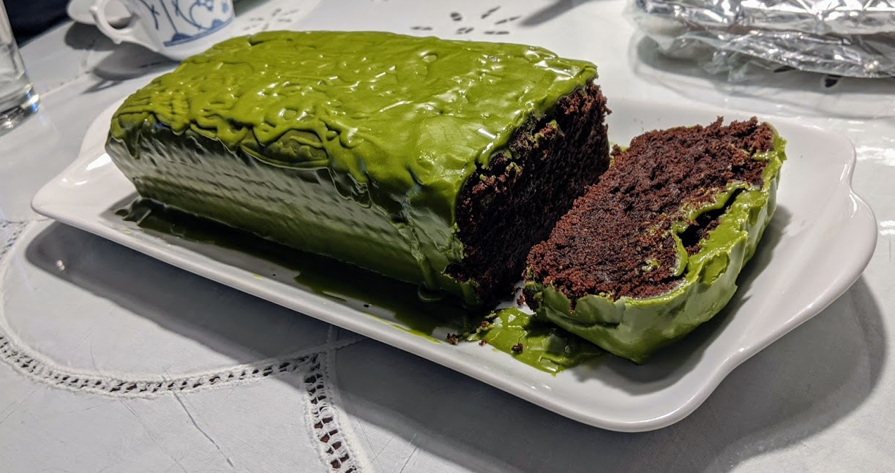

Gâteau au chocolat et sésame noirs

Ici avec un [glaçage au matcha](GlacageAuMatcha.html)
Pour un bon gâteau (disons, 6 personnes)
- 250mL de lait (ou de lait de soja)
- 5mL de vinaigre de cidre
- 130g de farine
- 25g de poudre de cacao
- Une cuillère à café de levure chimique
- Une demi-cuillère à café de bicarbonate de soude
- 80g de graines de sésame noir grillées
- 120g de chocolat noir
- 120g de beurre
- 100g de sucre glace
- Moudre les graines de sésame jusqu'à ce que ça forme une poudre bien fine. Quelques minutes dans petit mixeur bien puissant peuvent aussi faire l'affaire.
- Faire fondre le chocolat et le beurre doucement dans un gros saladier, au micro-ondes ou au bain-marie.
- Mélanger le lait avec le vinaigre avec un fouet dans un bol. Mélanger tous les ingrédients secs dans un autre bol.
- Faire préchauffer un four à 180°C. Ajouter le contenu des deux bols alternativement dans le saladier en mélangeant bien au fur et à mesure.
- Metre le tout dans un moule à cake recouvert de papier sulfurisé, et enfourner jusqu'à ce qu'une pique plantée dans le gâteau ressorte sèche. Ça prend typiquement entre 45 et 55 minutes.
- Déguster une fois refroidi, idéalement avec un glaçage (par exemple au matcha).
Retour à la liste des recettes